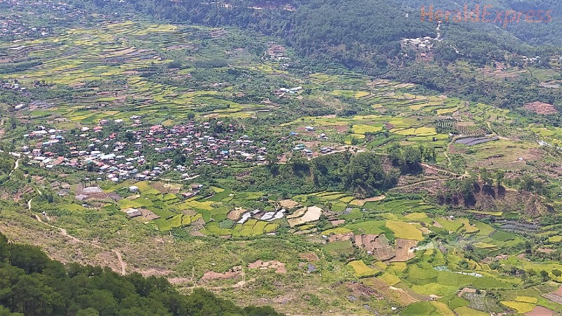

SAGADA - PHILIPPINES


EXPLORE A DIFFERENT WAY TO TRAVEL
Have a wonderful time on your journey and discovering more different cultures.
Enjoy the wonderful island life in Palawan, one of the top tourist destinations in the Philippines and frequently rated as one of the world's top islands. It is a well-liked vacation spot renowned for its breathtaking natural beauty.
It features islands and beaches with white sand, crystal-clear oceans, an amazing variety of marine life, shipwrecks, imposing towering limestone cliffs, and a strong cultural heritage. This largest island province in the Philippines should definitely be on your trip wish list if you enjoy swimming, island hopping, and diving.